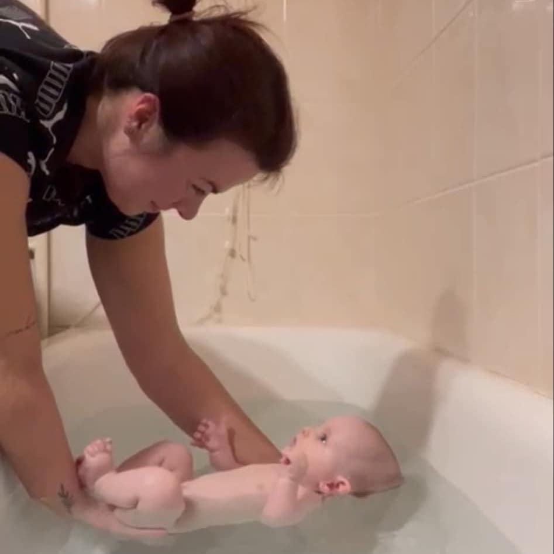
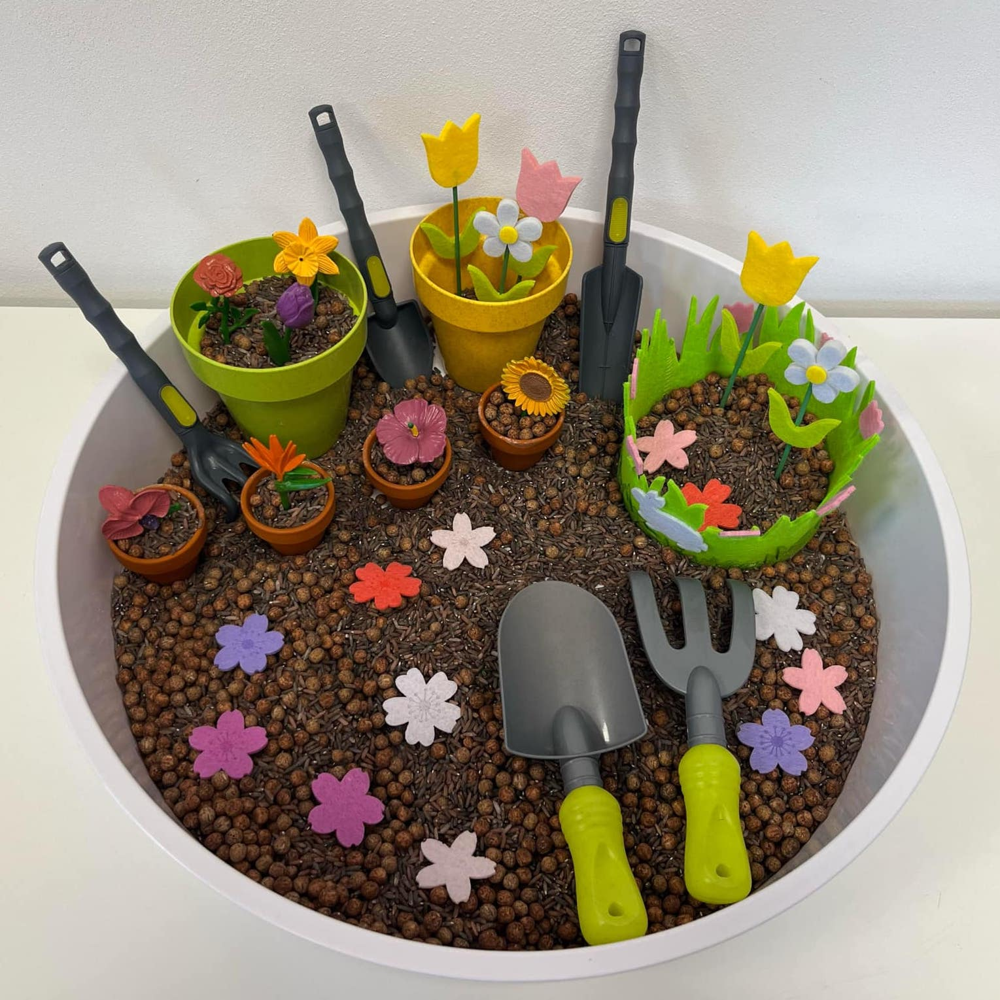

Vaničkování
Hrátky s tácky
Hlídání

Paní učitelka v dětské skupině.
Instruktorka plavání.
Teta, která hlídá, zabaví i rozvíjí.
Jedná se o plavání kojence či batolete ve vaně v domácím prostředí. Vana je napuštěna teplou vodou, je pro miminko velmi příjemná a má mnoho výhod. Kromě smyslupně a příjemně stráveného času získáte:
Od 6. týdne do 5. měsíce (po zahojení pupíku).
Lekce začíná přivítáním a seznámením s miminkem, jsou zařazeny informace o postupu vaničkování, o vývoji miminka, o správné manipulaci a péči, následuje vaničkování, kojenecká masáž a zodpovězení dotazů rodičů.
Délka jedné lekce trvá přibližně 60 minut. Délka pobytu ve vodě vyplývá z věku a kondice dítěte a pohybuje se v rozmezí 10 až 20 minut. Před zahájením lekce by mělo být dítě spokojené, vyspané a s odstupem asi 20 minut od posledního jídla, proto se většinou volí podvečerní lekce.
Nejdůležitější je mít doma vanu, kterou rodiče napustí nejlépe až pod odtok. Pro miminko na vaničkování je vhodné si předem nachystat osušku, kosmetiku na ošetření po koupání, tampónky z buničiny na čištění uší, čistou plenku, oblečení, oblíbené hračky. Rodiče by se před lekcí měli také nachystat. Obléct si nátělník s krátkým rukávem nebo lépe bez rukávu.
1 lekce pro jedno dítě stojí 800 Kč. Na lekci pro druhé a další dítě je 50% sleva. Což je výhodné pro sourozence nebo se můžete domluvit třeba s kamarádkou a uděláme více lekcí po sobě.
3 lekce 2000 Kč (opět platí 50% sleva na další děti).
6 lekcí 4000 Kč.
Vaničkování nemá za cíl naučit miminko plavat. Cílem je posílit a aktivovat svalové partie, které jsou potřebné k dalšímu správném vývoji. Vaničkováním se učí přípravné plavecké dovednosti, zejména formou hry. Ve vodě provádíme adaptaci na vodní prostředí, posilovací cviky, splývání na zádíčkách, a to vše doprovázíme říkankami a písničkami. Pokud je dítě ve vodě spokojené, uvolněné, dokáže splývat, nevadí mu voda v ouškách a obličeji, cíl kurzu je splněn. Teprve po této adaptaci se může přistoupit k nácviku plaveckých základních dovedností, které se učí ve věku 4-5 let.
Kontaktujte mě, ráda vám zodpovíd vaše dotazy a domluvíme vše potřebné.
Jmenuji se Petra Hamerníková, jsem učitelka v mateřské škole, certifikovaná chůva a instruktorka plavání kojenců a batolat.
Vystudovala jsem střední pedagogickou školu v Přerově a následně Vyšší odbornou školu pedagogickou v Litomyšli. Po studiu jsem učila v Dětské skupině v Praze, kde jsem se dostala k plavání a získala tak první zkušenosti s dětmi nejen na suchu, ale i ve vodě. Plavání s miminky je pro mě srdcová záležitost – sama jsem začala se svým synem už ve čtyřech měsících.
Nyní působím jako pečující osoba v Dětské skupině na Vysočině, vaničkuji miminka v domácím prostředí a spolupracuji s plaveckou školou v Brně.